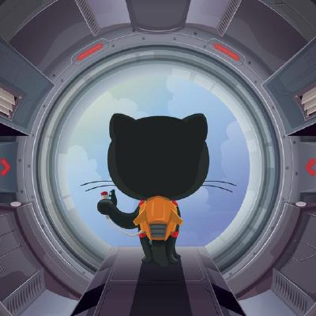
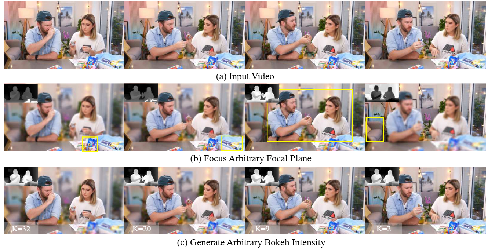
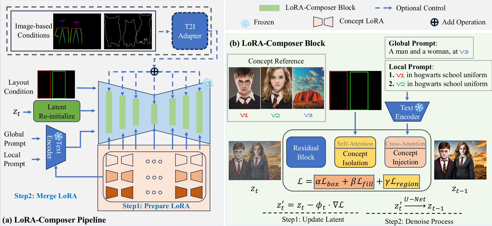
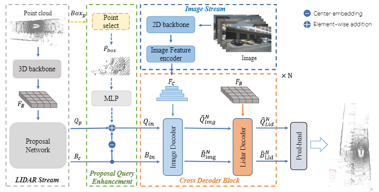

Yang YangPh.D. Student
State Key Lab of CAD\&CG
|
 |


Biography
My name is Yang Yang /杨阳. I am a first-year Ph.D. student in State Key Lab of CAD\&CG at Zhejiang University, advised by Prof. Deng Cai
My research interests lie in AIGC, especially Video Geneation/Editing and Customized Generation.
News
- [12/2025] One paper is accepted by TIP
Publications [Google Scholar]
|  | Any-to-Bokeh: Arbitrary-Subject Video Refocusing with Video Diffusion Model Yang Yang, Siming Zheng, Qirui Yang, Jinwei Chen, Boxi Wu, Xiaofei He, Deng Cai, Bo Li, Peng-Tao Jiang. |
|  | LoRA-Composer: Leveraging Low-Rank Adaptation for Multi-Concept Customization in Training-Free Diffusion Models Yang Yang, Wen Wang, Liang Peng, Chaotian Song, Yao Chen, Hengjia Li, Xiaolong Yang, Qinglin Lu, Deng Cai, Wei Liu, Boxi Wu. |
|  | CrossFusion: Interleaving Cross-modal Complementation for Noise-resistant 3D Object Detection Yang Yang, Weijie Ma, Hao Chen et al.
Arxiv, 2023 |
Experiences

|
Research Intern, vivo
Topic: Video Generation
Supervised by: Peng-Tao Jiang
|
© Yang Yang | Last updated: Dec 2025